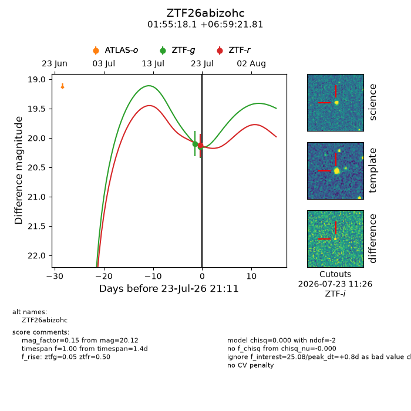
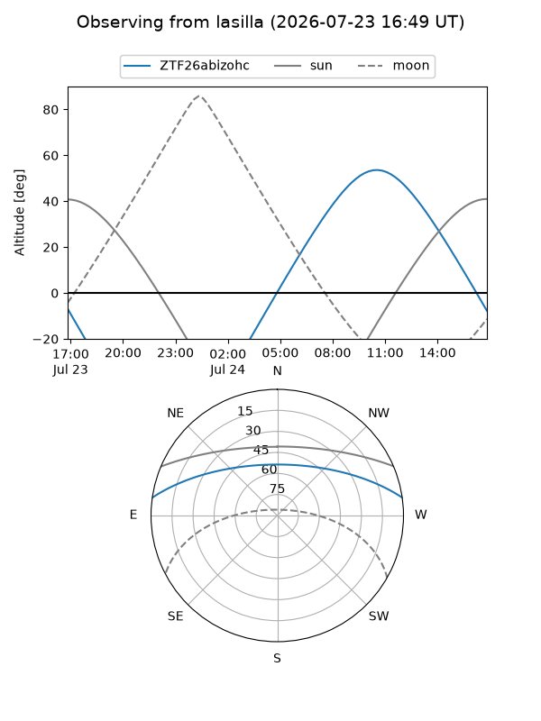
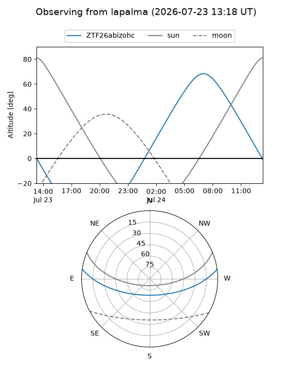
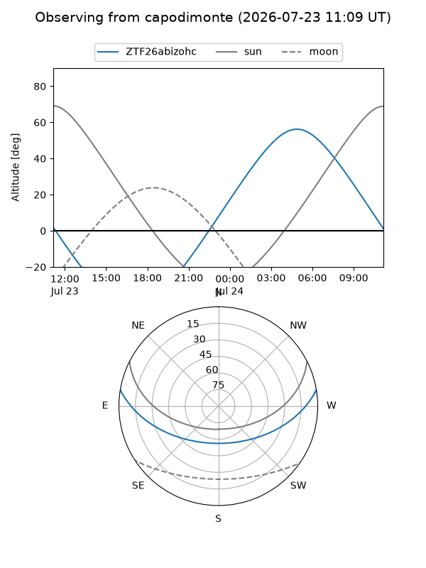
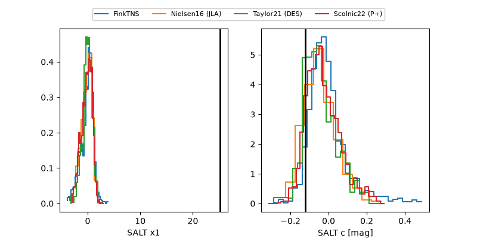

ZTF26abizohc
Target ZTF26abizohc at 2026-07-23 21:14
Aliases and brokers:
FINK-ZTF: ztf.fink-portal.org/ZTF26abizohc
Lasair-ZTF: lasair-ztf.lsst.ac.uk/objects/ZTF26abizohc
ALeRCE-ZTF: alerce.online/object/ZTF26abizohc
Direct TNS query: direct search
alt names
ZTF26abizohc (ztf,fink_ztf)
Coordinates:
equatorial (ra, dec) = 28.8256,+6.98939
equatorial (HMS+DMS) = 01:55:18.14,+06:59:21.81
galactic (l, b) = (149.6071,-52.54311)
Flags:
peak dt: +0.8
Photometry:
last ztfg=20.15, ztfr=20.12
2 ztfg, 1 ztfr detections
Lightcurve

Visibility



Additional plots
